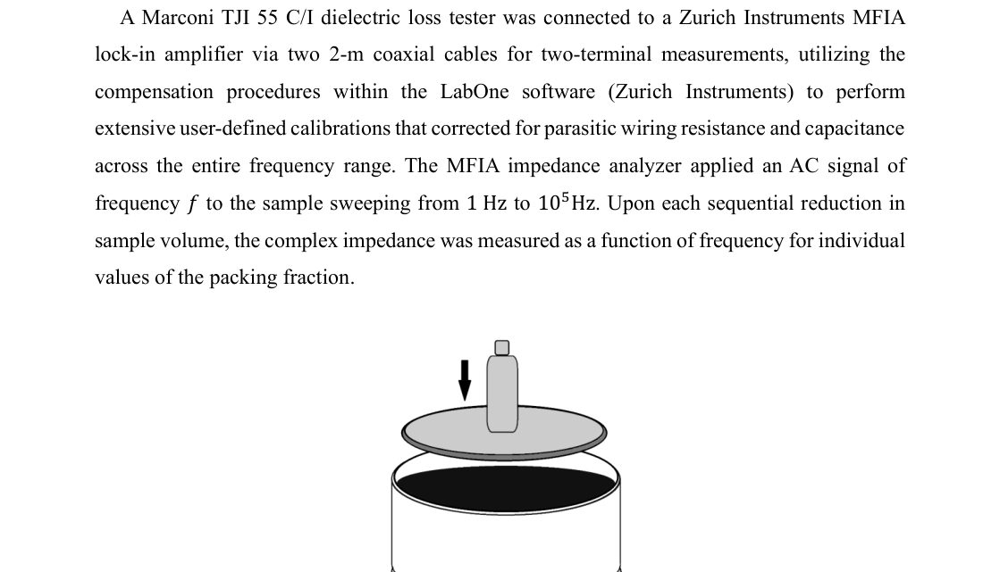
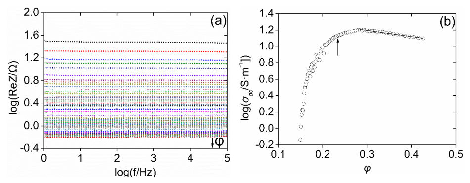

← Index · ← Previous · Next →
Authors: Andrew Jackson, Theodoros Kapourniotis, Animesh Datta
Type: theory · Category: quantum information and computing · PDF: https://arxiv.org/pdf/2605.19205v1
Analysis basis: full PDF text, analyzed in chunks
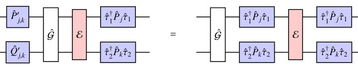
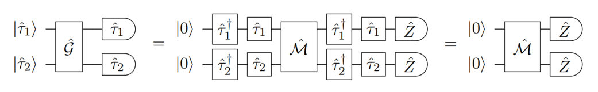
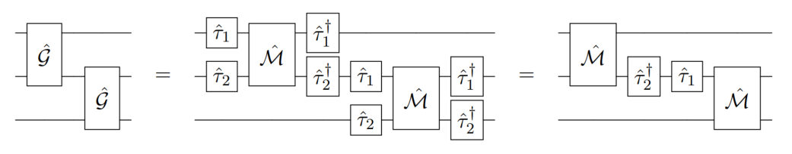
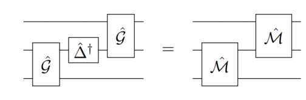
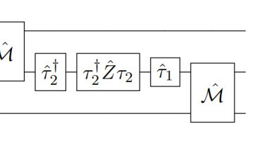
Summary. This paper extends quantum accreditation protocols to include non-Clifford two-qubit gates, which are native to many modern quantum processors. By introducing new twirling methods and gate-insertion techniques, the authors enable the verification of complex quantum circuits that were previously difficult to certify. This provides a scalable way to bound errors in the NISQ era.
Why it may be interesting. This is highly relevant for researchers in open quantum systems and quantum computing as it provides a formal method to verify the fidelity of non-Clifford operations, which are essential for the next generation of NISQ hardware.
Main problem. Existing quantum accreditation protocols are limited to Clifford two-qubit gates, leaving a gap for verifying NISQ hardware that uses native non-Clifford gates like fSim or XY families.
Main result. The authors develop a scalable family of quantum accreditation protocols and error-twirling methods specifically for circuits containing non-Clifford, tau-decomposable, and XY-decomposable two-qubit gates.
Method. The framework uses a Quantum Accreditation Protocol (QAP) involving target and trap circuits, combined with a generalized twirling technique to reduce complex CPTP errors into manageable stochastic errors.
Model / system. The study focuses on NISQ-era quantum hardware using non-Clifford two-qubit gates (e.g., fSim, XY-interaction families) with noise modeled as CPTP maps applied after gates and state preparation.
Key observables. Total Variation Distance (TVD) between ideal and actual probability distributions, and the failure rate of trap circuits.
Important parameters / regimes. Confidence level (alpha), error detection probability (lower bound of 0.5), and the minimum looseness (theta).
Assumptions / limitations. Errors are assumed to be CPTP maps that can be effectively twirled into stochastic error; for XY-decomposable gates, it is assumed that twirling gates have identical error.
Figures summary. Figure 1 illustrates the twirling process; Figure 2 shows the cancellation of tau gates in trap circuits; Figure 3 demonstrates a failure case where tau gates do not cancel; Figure 12 shows the circuit equation for transformed Pauli gates.
Paper structure. The paper introduces the problem of non-Clifford accreditation, defines the mathematical framework for tau-decomposable and XY-decomposable gates, presents algorithms for constructing target and trap circuits, provides formal proofs for error twirling and gate cancellation, and concludes with discussions on limitations and future work.
We develop a family of quantum accreditation protocols for quantum circuits with non-Clifford two-qubit gates. The latter includes families of gates such as the fSim and XY families of gates, native to existing hardwares. We provide practical and scalable protocols that upper-bound the total variation distance between the probability distributions of error-free and erroneous quantum computations. We also establish the robustness of our protocols to small perturbations and generalize Pauli twirling to non-Pauli single-qubit bases, which may be of independent interest.
Authors: Clémence Chevignard, Yixin Shen, André Schrottenloher
Type: theory · Category: quantum information and computing · PDF: https://arxiv.org/pdf/2605.20133v1
Analysis basis: full PDF text, analyzed in chunks
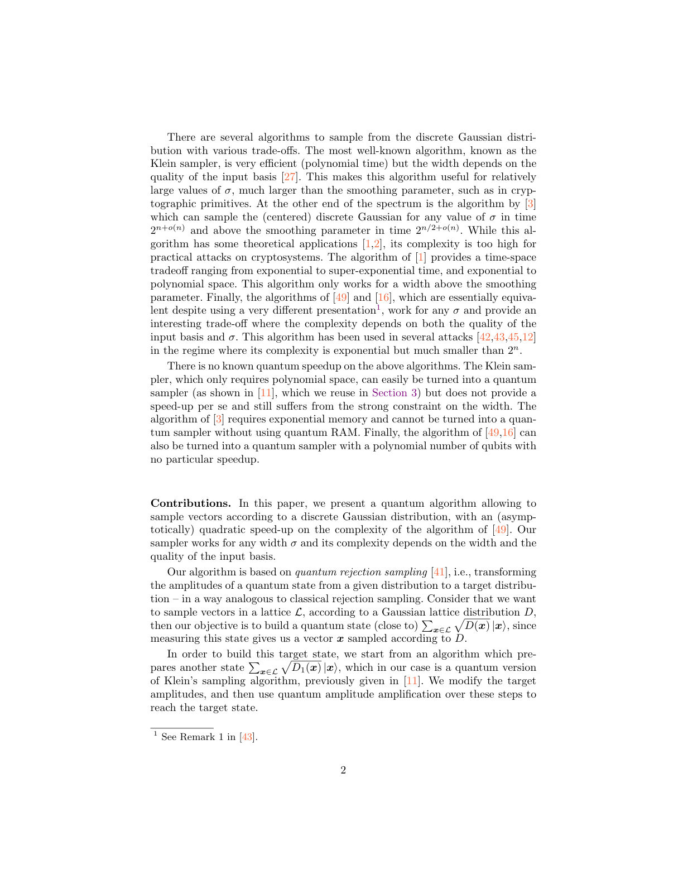
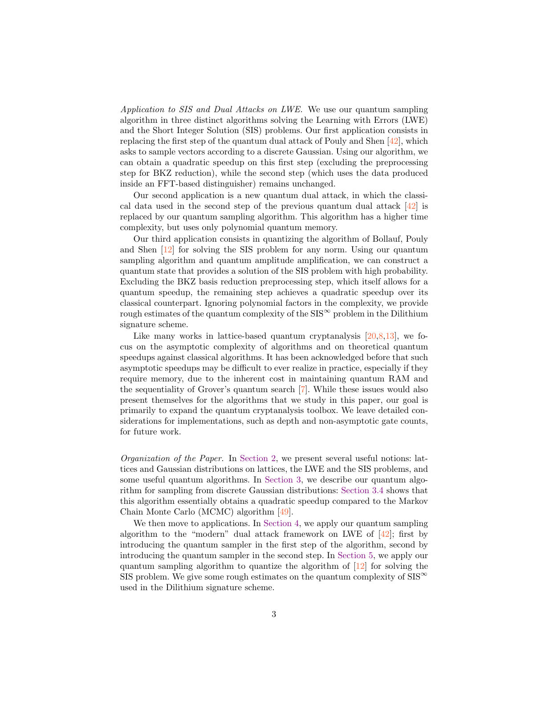
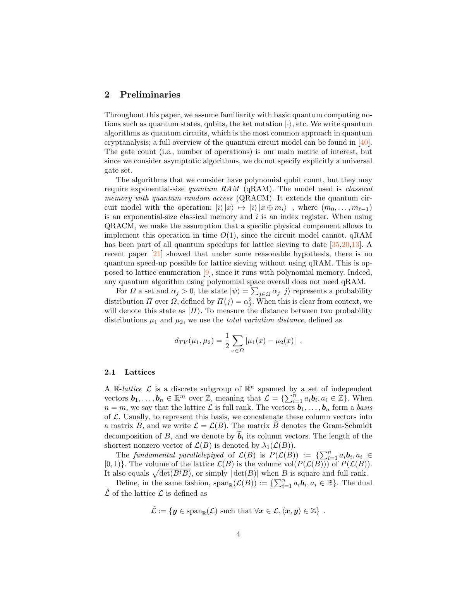
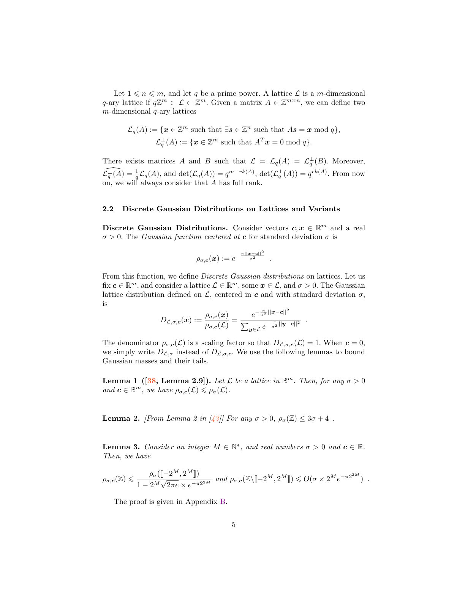
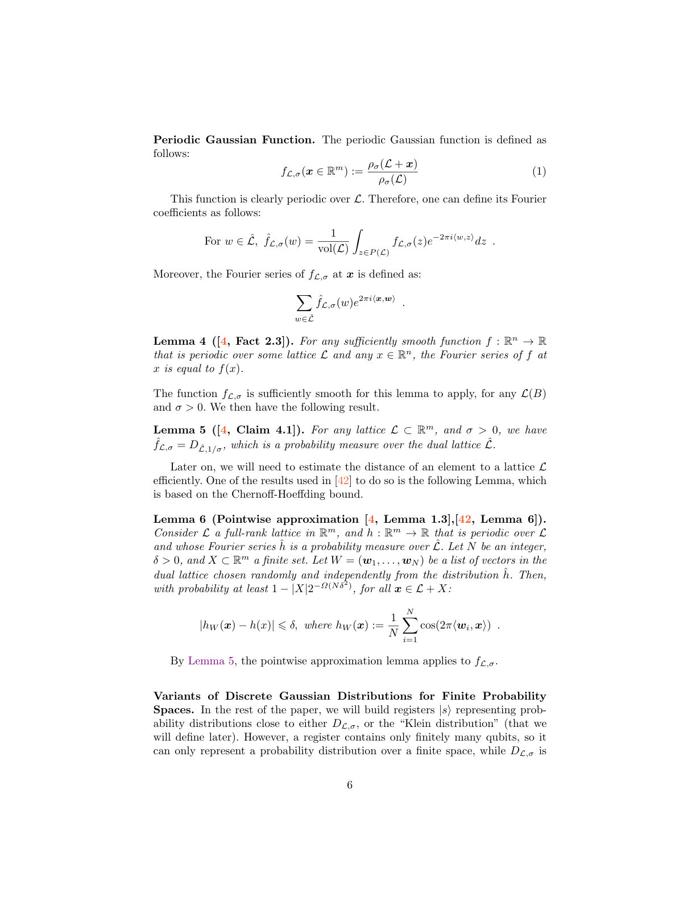
Summary. This paper introduces a quantum algorithm for Discrete Gaussian Sampling that is quadratically faster than existing classical methods. By applying this sampler to lattice-based cryptographic problems, the authors derive improved quantum dual attacks on LWE and SIS, offering versions that optimize either speed or memory requirements.
Why it may be interesting. not directly relevant
Main problem. Developing an efficient quantum algorithm for Discrete Gaussian Sampling (DGS) on lattices to improve quantum attacks on lattice-based cryptography.
Main result. The authors present a quantum algorithm based on quantum rejection sampling that achieves an asymptotic quadratic speedup over classical MCMC-based sampling and improves upon previous quantum dual attacks on LWE and SIS.
Method. The method utilizes quantum rejection sampling combined with a quantum version of Klein's sampling algorithm, employing quantum amplitude amplification and amplitude transduction to transform distributions.
Model / system. The mathematical framework involves $n$-dimensional lattices, $q$-ary lattices, and the quantum circuit model using the QRACM (Quantum Random Access with Classical Memory) model.
Key observables. Total variation distance between the prepared quantum state and the target Gaussian distribution; gate count complexity.
Important parameters / regimes. Gaussian width ($\sigma$), lattice dimension ($m$), precision parameter ($ u$), and the range parameter ($M$) for the sampling domain.
Assumptions / limitations. Assumes classical precomputation of QR decomposition; assumes the availability of quantum random access memory (qRAM) for certain attack variants; focuses on asymptotic complexity.
Paper structure. The paper introduces the DGS problem and its cryptographic significance, defines the mathematical framework of lattices and Gaussian distributions, presents the quantum Klein sampler and rejection sampling algorithms, proves complexity bounds and error analysis, and finally demonstrates applications to quantum dual attacks on LWE and SIS.
Discrete Gaussian Sampling on lattices is a fundamental problem in lattice-based cryptography. It appears both in basic cryptographic primitives such as digital signatures and as an important cryptanalysis building block for solving hard lattice problems. In this paper, we show a quantum algorithm based on the quantum rejection sampling technique whose complexity is asymptotically quadratically faster than its classical counterpart in [Wang & Ling, IEEE Trans. Inf. Theory 2019]. Our sampler outputs a quantum state which can either be measured to get the desired distribution or be used directly as such in other quantum algorithms. By doing so, we derive two versions of quantum dual attacks that improve upon the previous ones in [Pouly & Shen, EUROCRYPT 2024]. The two versions are incomparable, each having distinct advantages (speed vs memory requirement). The second version is particularly interesting as it requires only polynomial classical and quantum memory, excluding the classical memory used in the preprocessing step of the Discrete Gaussian sampler. Our quantum Discrete Gaussian sampler can also be used to speed up the algorithm for solving the Short Integer Solution problem, in any norm, of [Bollauf, Pouly & Shen, ePrint 2026/225].
Authors: Ke Wang, Zikang Jia, Shravan Veerapaneni, Zhiyan Ding
Type: theory · Category: quantum information and computing · PDF: https://arxiv.org/pdf/2605.20071v1
Analysis basis: full PDF text, analyzed in chunks
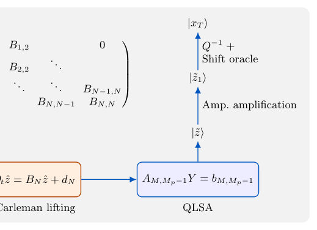
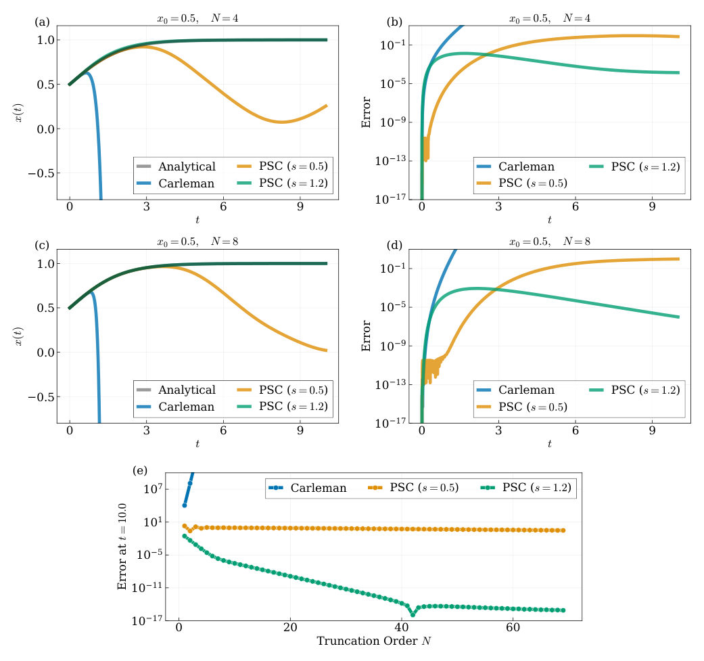
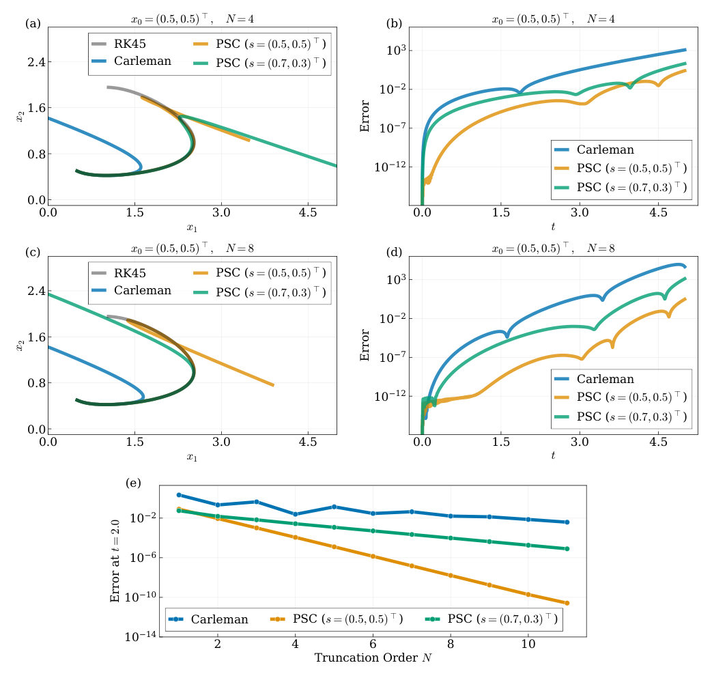
Summary. This paper introduces a new quantum algorithm for solving nonlinear differential equations by using a pivot-shift technique to stabilize the linearization process. It significantly extends the range of applicable nonlinear systems and improves the efficiency of simulating both stable and unstable dynamics on quantum hardware.
Why it may be interesting. not directly relevant
Main problem. Addressing the instability and divergence of standard Carleman linearization when solving nonlinear ordinary differential equations on quantum computers.
Main result. The development of a pivot-shifted Carleman linearization framework that expands the class of solvable nonlinear systems, achieves exponential error decay for stable systems, and provides improved short-time convergence for unstable systems.
Method. A framework involving a pivot-shift transformation (u = x - s), a Lyapunov transform for stability control, and Carleman lifting to embed nonlinear dynamics into a higher-dimensional linear system solved via Quantum Linear System Algorithms (QLSA).
Model / system. n-dimensional quadratic nonlinear ordinary differential equations (ODEs) of the form d/dt x = F2(x tensor x) + F1 x + F0, with specific validation using the logistic equation and Lotka-Volterra predator-prey model.
Key observables. l2 error norm between simulated and reference trajectories, spectral abscissa, and quantum query complexity.
Important parameters / regimes. Truncation order (N), pivot state (s), simulation time (T), target precision (epsilon), and the spectral abscissa of the shifted linear part.
Assumptions / limitations. Requires block-encoding of coefficient matrices, efficient state preparation for the initial and pivot states, and assumes the existence of a stable region for long-time convergence.
Figures summary. Figure 1 shows the algorithmic pipeline flowchart; Figure 2 demonstrates stability and exponential error decay in the logistic equation; Figure 3 shows phase-plane trajectories and error decay for the Lotka-Volterra model.
Paper structure. The paper introduces the mismatch problem in nonlinear quantum simulation, proposes the pivot-shifted framework, details the mathematical transformations (shifting, Lyapunov, lifting), provides complexity analysis and convergence proofs, and validates the method with numerical experiments on the logistic and Lotka-Volterra equations.
We develop a pivot-shifted Carleman linearization framework for quantum algorithms solving quadratic nonlinear ordinary differential equations. By shifting the dynamics by a pivot state prior to Carleman lifting, and combining this with a Lyapunov transform and rescaling, we enlarge the class of nonlinear systems that can be efficiently simulated on quantum computers. For systems that exhibit stability in the shifted coordinates, we establish long time convergence of the truncated Carleman embedding. We prove that the truncation order scales only logarithmically with the simulation time and target precision, and we derive end-to-end quantum query complexity bounds for preparing a state proportional to the final solution. By introducing a modified nonlinearity condition, this framework entirely removes the conventional lower bound requirement on the initial condition. For more general systems that remain unstable after shifting, we provide short time convergence guarantees that are similarly free from the initial condition constraints. Numerical experiments on the logistic and the Lotka-Volterra equations demonstrate that an appropriate pivot choice improves stability and accuracy, and yields exponential error decay with truncation order. These results show that pivot shifting provides a practical and theoretically justified route for extending Carleman-based quantum algorithms to a broader class of nonlinear dynamical systems.
Authors: Carlos A. Durán Paredes, Javier E. León Calderón, Nicolás Sánchez Perea, German Darío Díaz, Camilo Segura Quintero
Type: experiment · Category: quantum information and computing · PDF: https://arxiv.org/pdf/2605.19233v1
Analysis basis: full PDF text, analyzed in chunks
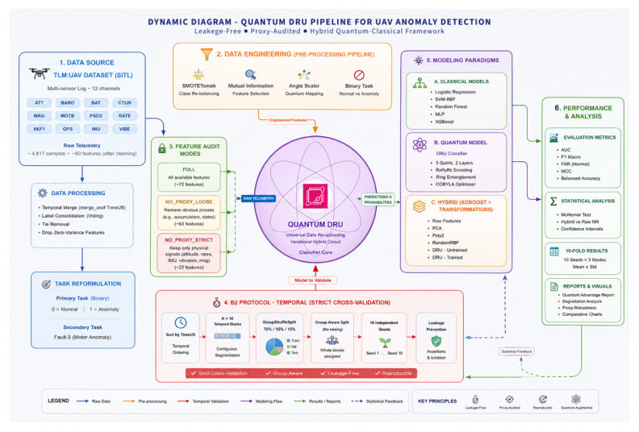
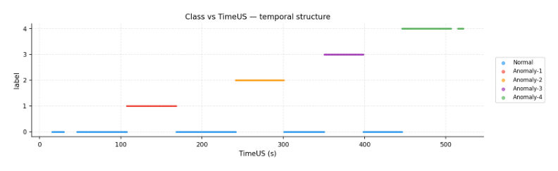
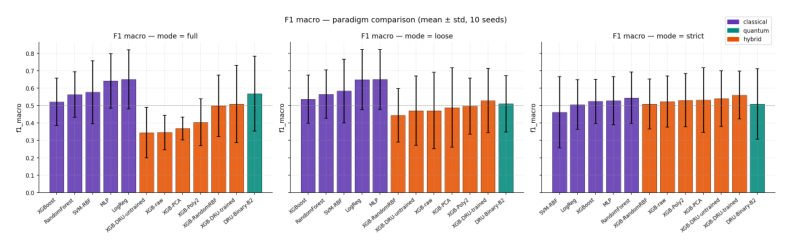
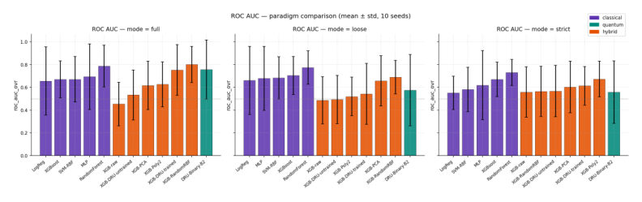
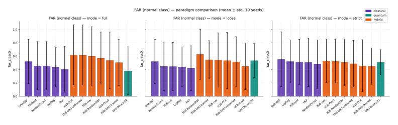
Summary. This paper presents a rigorous, leakage-free framework for evaluating quantum machine learning in the context of UAV cybersecurity. It demonstrates that a hybrid quantum-classical model can maintain better performance when stripped of contextual proxies compared to traditional classical models. The work provides an open-source implementation for benchmarking quantum-enhanced analytics in aerospace systems.
Why it may be interesting. not directly relevant
Main problem. Evaluating the true effectiveness of Quantum Machine Learning for UAV anomaly detection by preventing information leakage from temporal correlations and contextual proxies.
Main result. The trained-DRU hybrid model is the only architecture showing a directional increase in F1 macro when moving from feature-rich to proxy-free modes, achieving the lowest false-alarm rate.
Method. A leakage-free evaluation protocol using group-aware temporal splitting (B2) and a three-mode feature audit (full, loose, strict) to compare hybrid quantum-classical classifiers against classical non-linear baselines.
Model / system. The study uses the TLM:UAV benchmark dataset involving 12 sensor subsystems of an Unmanned Aerial Vehicle and a 5-qubit Data Re-uploading (DRU) circuit with 2 layers and ring entanglement.
Key observables. F1 macro, ROC AUC, and False-Alarm Rate (FAR).
Important parameters / regimes. 5 qubits, 2 layers, RxRyZ encoding, 30 trainable parameters, and 10 contiguous TimeUS blocks for temporal splitting.
Assumptions / limitations. The performance differences are noted to be within the inter-seed standard deviation, meaning the quantum advantage is presented as a directional signal rather than a statistically established difference.
Figures summary. Figure 3 illustrates the degradation of F1 macro across different paradigms, highlighting the unique performance stability of the trained-DRU hybrid.
Paper structure. The paper introduces the UAV anomaly detection problem, defines the leakage-free evaluation protocol and feature audit modes, presents the quantum and classical model architectures, details the experimental results comparing hybrid vs. classical performance, and concludes with implementation details.
Unmanned aerial vehicles (UAVs) are cyber-physical systems whose attack surface spans networked avionics and on-board sensor fusion: a compromised GPS or battery module can mimic a benign mission segment and evade naive anomaly detectors. We present a leakage-free evaluation of quantum machine learning for UAV anomaly detection on the multi-sensor TLM:UAV benchmark. Three contributions support the study. (i) A group-aware temporal protocol (B2) partitions the dataset into ten contiguous TimeUS blocks and evaluates over ten seeds, eliminating the inflation produced by random stratified splits that mix neighbouring samples. (ii) A three-mode feature audit (full/loose/strict) quantifies how much accuracy stems from instantaneous physical signals versus contextual proxies (cumulative energy, battery state, GPS trajectory). (iii) A hybrid XGBoost + Data Reuploading (DRU) classifier is benchmarked against five paired non-linear controls (raw, PCA, polynomial-2, random-RBF, and an untrained DRU map) under identical budgets. The standalone DRU does not consistently match the strongest classical baseline across seeds; however, the trained-DRU hybrid is the only model whose mean F1 macro shifts upward from full to strict (+0.05), a directional signal that the per-seed standard deviations prevent from being interpreted as a statistically established difference. The trained-DRU hybrid also records the lowest mean false-alarm rate under proxy-free evaluation, subject to the inter-seed variance reported. We frame this as an incremental, reproducible quantum-enhanced hybrid benefit, and provide an open Qiskit 2.x implementation as a benchmark for cybersecurity analytics in NISQ-era aerospace systems.
Authors: Hyoga Iizumi, Naoki Ishikawa, Shunsuke Uehashi, Kota Nakamura, Shusaku Umeda, Toshiaki Koike-Akino
Type: theory · Category: quantum information and computing · PDF: https://arxiv.org/pdf/2605.19389v1
Analysis basis: full PDF text, analyzed in chunks
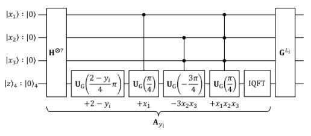
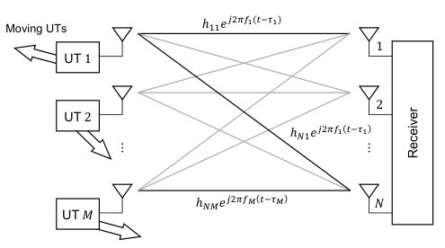
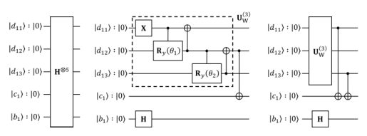
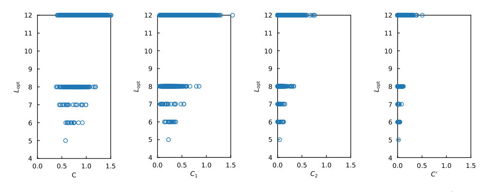
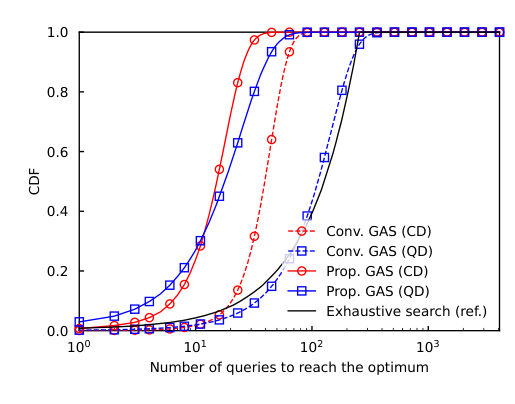
Summary. This paper proposes a quantum algorithm to solve the high-complexity problem of signal detection in dense, overloaded wireless networks. By using Grover Adaptive Search and a specialized W-state preparation, the authors demonstrate a significant reduction in quantum computational resources while maintaining optimal detection accuracy.
Why it may be interesting. not directly relevant
Main problem. The exponential computational complexity of optimal Maximum Likelihood Detection (MLD) in overloaded MIMO random access channels, which creates a trade-off between detection performance and complexity.
Main result. The proposed quantum-native detector achieves optimal detection performance while reducing the required Grover rotation count by up to 65% compared to conventional Grover Adaptive Search.
Method. The paper utilizes Grover Adaptive Search (GAS) combined with a W-state-based search space reduction technique and an adaptive parameter tuning strategy using channel indicators.
Model / system. An overloaded MIMO random access channel where multiple user terminals (M > N) transmit asynchronous signals with propagation delays and frequency deviations.
Key observables. Bit Error Rate (BER) and query complexity (number of Grover rotations in both classical and quantum domains).
Important parameters / regimes. Number of users (M), number of receive antennas (N), maximum propagation delay (tau_max), and modulation orders (BPSK, QPSK).
Assumptions / limitations. The proposed speedup assumes the availability of fault-tolerant quantum computing (FTQC) rather than NISQ-era devices.
Figures summary. Figure 1 shows the GAS quantum circuit; Figure 2 depicts the MIMO system model; Figure 4 illustrates the localization of the Grover operator distribution; Figure 5 compares query complexity; Figure 7 compares different initial threshold values; Figure 8 shows CDF of query complexity; Figure 10 shows symbol distribution in the complex plane.
Paper structure. The paper introduces the MIMO problem, proposes a quantum-native MLD formulation using GAS, details a search space reduction method via W-states, introduces an adaptive parameter tuning strategy for GAS, provides complexity analysis, and validates results through BER and query complexity simulations.
In this paper, we propose a quantum-native formulation of maximum likelihood detection (MLD) for overloaded multiple-input multiple-output (MIMO) systems in a random access channel, where numerous user terminals share the same channel resource and asynchronously transmit signals. Classical linear detectors suffer from significant performance degradation in this scenario, whereas the exhaustive-search MLD achieves the optimal performance but incurs an exponential computational complexity. To overcome this trade-off, we formulate the MLD as a binary optimization problem and solve it via Grover adaptive search (GAS) -- a quantum exhaustive search algorithm offering quadratic speedup in fault-tolerant quantum computing. We then introduce a search space reduction technique to substantially decrease the required computational resources. In addition, we investigate efficient parameter settings for GAS through probability analysis to improve convergence performance. We demonstrate that the proposed detector achieves the optimal detection performance while reducing the required Grover rotation count to reach the solution by up to approximately 65% compared with the conventional GAS, showing its potential as a viable solution for future quantum-accelerated wireless systems.
Authors: José Campos
Type: theory · Category: quantum information and computing · PDF: https://arxiv.org/pdf/2605.19736v1
Analysis basis: full PDF text, analyzed in chunks
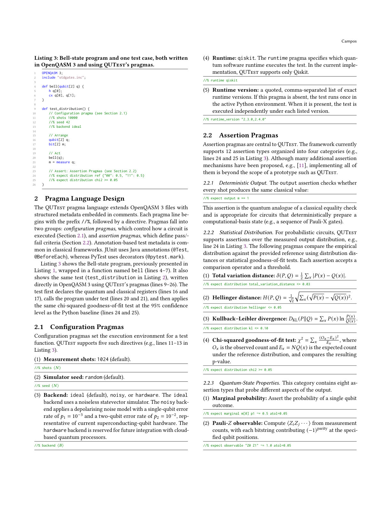
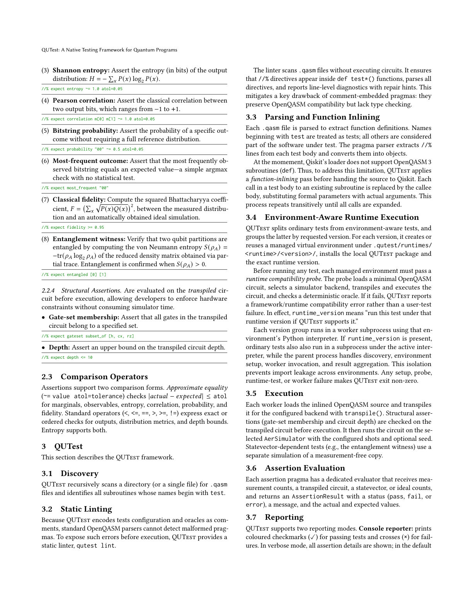
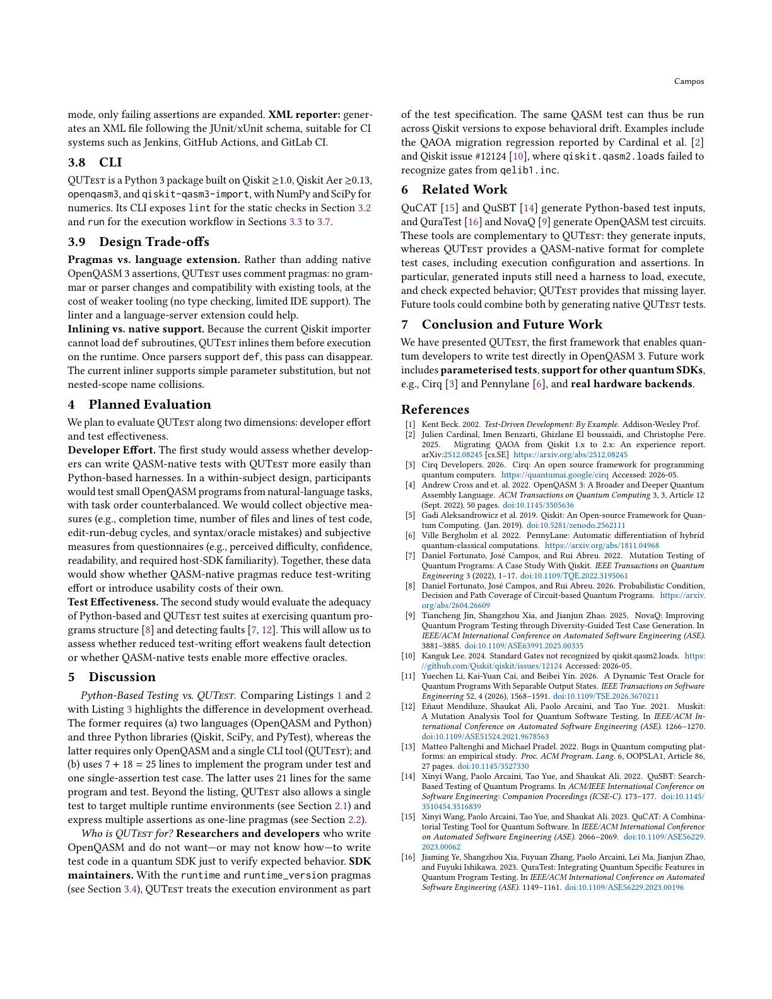
Summary. QUTest is a new testing framework that brings assertions and execution configurations directly into OpenQASM 3 files using pragma comments. This eliminates the need for external Python test harnesses, making quantum circuit verification more portable, readable, and easier to integrate into continuous integration pipelines.
Why it may be interesting. not directly relevant
Main problem. Quantum program testing currently suffers from a 'language gap' where OpenQASM 3 circuits must be verified using external Python-based test harnesses, leading to reduced portability, high maintenance, and high barriers to entry.
Main result. The authors present QUTest, a native testing framework that allows both programs and tests to exist as standard .qasm files, using pragma comments to embed assertions and configurations directly within the quantum code.
Method. The framework uses a pragma language (//% comments) to implement the Arrange/Act/Assert pattern, featuring a CLI for test discovery, a linter for syntax validation, and a preprocessing pass for function inlining.
Model / system. The framework is designed for OpenQASM 3 programs and supports ideal (noiseless) and noisy (depolarizing noise) simulators via Qiskit Aer.
Key observables. Statistical metrics (TVD, Hellinger distance, KL divergence, Chi-squared), quantum-state properties (fidelity, entanglement witnesses, entropy), and structural metrics (circuit depth, gate-set membership).
Important parameters / regimes. Single-qubit error rate p1 = 10^-3 and two-qubit error rate p2 = 10^-2 for the noisy model.
Assumptions / limitations. The current implementation is limited to the Qiskit runtime and relies on a function-inlining pass to bypass Qiskit's lack of native subroutine support.
Figures summary. The paper includes code listings comparing a traditional Python-based test harness to the new QUTest implementation using a Bell-state circuit.
Paper structure. The paper introduces the language gap problem, describes the QUTest framework architecture (pragmas, assertion types, and tooling), details the implementation (inlining and linting), and discusses future work including hardware integration and evaluation.
Quantum programs are often shared as OpenQASM 3 circuits, but tests are still written in host languages such as Python with Qiskit. We present QUTest, a native framework in which both programs and tests are standard .qasm files. Tests follow the Arrange / Act / Assert pattern, while configuration, runtime requirements, and assertions are encoded as pragma comments (//%), preserving compatibility with existing OpenQASM tools. QUTest provides 12 assertion types spanning deterministic, statistical, quantum-state, and structural checks, plus a linter and an environment-aware mode for running the same test across selected runtime versions in isolated environments. Its CLI supports automatic test discovery, runtime compatibility checks, and XML reports for continuous integration. We describe the pragma language, implementation, and a planned evaluation using coverage and mutation testing. QUTest is available at https://github.com/QBugs/qutest. Video demo: https://youtu.be/FvgvsiAXuW0.
Authors: Yury A. Budkov
Type: theory · Category: disordered systems and neural networks · PDF: https://arxiv.org/pdf/2605.20141v1
Analysis basis: full PDF text, analyzed in chunks
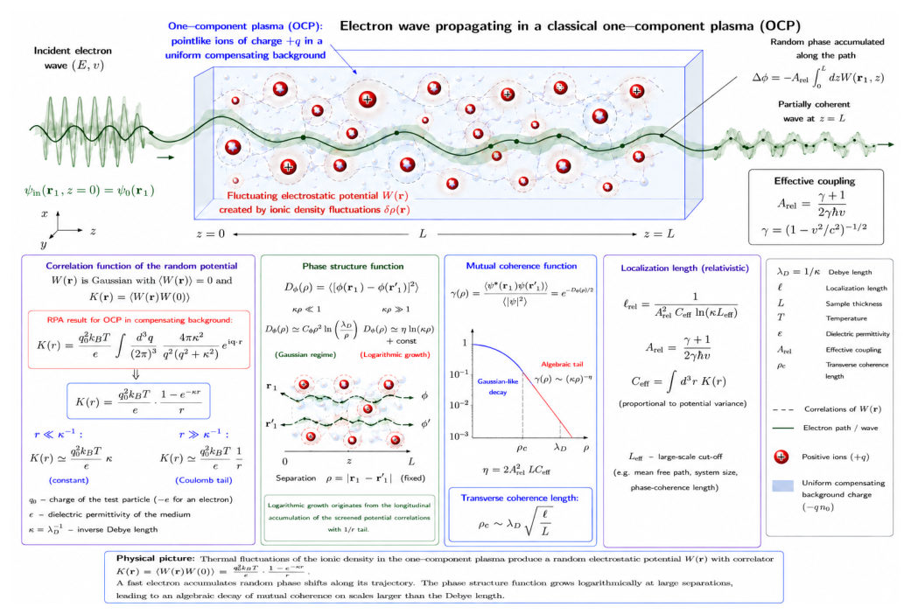
Summary. The paper shows that increasing the energy of relativistic electron beams cannot indefinitely suppress phase noise caused by Coulomb disorder because the coupling constant reaches a relativistic saturation point. This implies that standard electron microscopy voltages are already near the optimal regime for minimizing decoherence. The fundamental scaling laws for coherence and localization remain robust even in the relativistic limit.
Why it may be interesting. It provides a fundamental limit to coherence preservation in high-energy particle beams, which is relevant for understanding decoherence in any system where relativistic motion and stochastic potentials intersect.
Main problem. Investigating whether relativistic effects modify the theory of mutual coherence and localization for electron beams propagating through Coulomb-disordered media.
Main result. The effective coupling constant governing phase fluctuations saturates at a fundamental floor of 1/(2hbar*c) in the ultra-relativistic limit, implying that increasing beam energy yields diminishing returns for suppressing decoherence.
Method. The author uses a relativistic paraxial reduction of the Dirac equation and an eikonal approximation to derive a paraxial Schrodinger-like equation for the electron envelope spinor.
Model / system. Relativistic electron beams propagating through a thermally fluctuating one-component plasma (classical electrolyte) representing Coulomb-disordered media.
Key observables. Transverse coherence length (rho_c), single-particle localization length (l), and the phase structure function (D_phi(rho)).
Important parameters / regimes. Lorentz factor (gamma), Debye screening length (lambda_D), sample thickness (L), and the effective coupling constant (A_rel).
Assumptions / limitations. Weak field limit (|W| << E + mc^2), neglect of spin-dependent terms (spin-orbit and Darwin), and the eikonal (straight-line) approximation.
Paper structure. The paper begins by extending non-relativistic theory to the relativistic regime using the Dirac equation, derives a paraxial equation and a new coupling constant, analyzes the asymptotic behavior of coherence and localization, and concludes with implications for TEM experimental parameters.
We show that the non-relativistic theory of mutual coherence and localization in Coulomb-disordered media can be extended to relativistic electron beams used in transmission electron microscopy (TEM). Starting from the Dirac equation, we derive a paraxial Schrödinger-like equation for the envelope spinor and obtain an effective coupling constant $A_{\rm rel}=(γ+1)/(2γ\hbar v)$ that governs the disorder-induced phase fluctuations. In the non-relativistic limit $γ\to1$ this reduces to $1/(\hbar v)$, while for ultra-relativistic electrons it saturates at $1/(2\hbar c)$. The universal relation between the transverse coherence length $ρ_c$ and the single-particle localization length $\ell$, namely $ρ_c\simλ_D\sqrt{\ell/L}$, remains unchanged. We compare the asymptotic behaviour of the phase structure function $D_φ(ρ)$ and the localization length in the non-relativistic and relativistic regimes, and show that the emergent algebraic decay of mutual coherence at large separations, analogous to the wave-structure-function asymptotics in turbulent media, persists in both cases. The results imply that standard TEM energies (100--300~keV) are already close to the optimal regime for minimizing Coulomb decoherence, and that further increasing the beam energy yields diminishing returns. While the asymptotic coherence decay is algebraic rather than exponential, the corresponding exponent can still be large for realistic experimental parameters, so the effect is primarily of conceptual and asymptotic significance.
Authors: Sebastian Müller, Martin Sieber
Type: theory · Category: other · PDF: https://arxiv.org/pdf/2605.19019v1
Analysis basis: full PDF text, analyzed in chunks
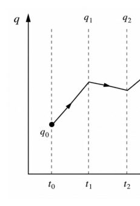
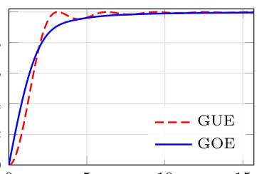
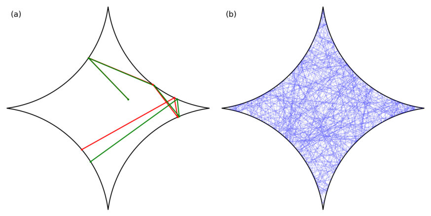
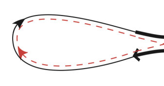
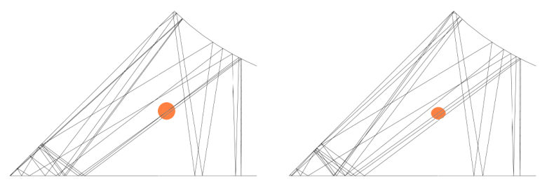
Summary. This didactic article provides a comprehensive derivation of Gutzwiller's trace formula starting from the Feynman path integral. It bridges the gap between classical periodic orbits and universal quantum spectral statistics, showing how semiclassical orbit summation reproduces Random Matrix Theory results.
Why it may be interesting. not directly relevant
Main problem. The paper aims to provide a didactic derivation of the Gutzwiller trace formula and establish the connection between semiclassical periodic-orbit theory and the universal spectral statistics predicted by Random Matrix Theory (RMT).
Main result. The authors demonstrate that summing over classical periodic orbits and their encounters (pseudo-orbits) recovers the results of the supersymmetric sigma model and RMT, including the effects of time-reversal symmetry.
Method. The derivation utilizes the Feynman path integral, the stationary-phase approximation, and the analysis of encounter structures (links and vertices) within a semiclassical framework.
Model / system. The focus is on conservative, classically chaotic quantum systems, including billiard systems, quantum graphs, and many-body chaotic systems, with considerations for time-reversal invariance.
Key observables. Quantum energy levels, density of states, spectral correlation functions, and the spectral form factor.
Important parameters / regimes. Semiclassical limit (h-bar approaching zero), Heisenberg time, Ehrenfest time, and the stability matrix (trace of M).
Assumptions / limitations. The system is assumed to be in the semiclassical regime where classical actions are much larger than h-bar, and the stationary phase approximation assumes non-degenerate, isolated periodic orbits.
Figures summary. Figure 1 illustrates the Feynman path integral as broken line paths; Figure 2 compares correlation functions and form factors for GUE and GOE ensembles; Figure 9 and 10 show encounter diagrams and the connectivity of orbit segments.
Paper structure. The paper begins with a derivation of the trace formula from the path integral, moves to the construction of the semiclassical propagator, then develops the theory of spectral statistics via periodic orbits, explores the correspondence with the sigma model and RMT, and concludes with discussions on symmetries and deviations from universality.
Gutzwiller's trace formula has a central place in quantum chaos because it provides semiclassical approximations for quantum energy levels in classically chaotic systems by linking them to classical periodic orbits. In this didactic article, we discuss a derivation of the trace formula starting from the Feynman path integral. We then describe how the trace formula is used to explain universal features in the distribution of the quantum energy levels that are described by random matrix theory, and we give an overview of related work.
Authors: Coraline Bacq, Alessio Caddeo, Saskia Demulder, Johanna Erdmenger
Type: theory · Category: other · PDF: https://arxiv.org/pdf/2605.19925v1
Analysis basis: full PDF text, analyzed in chunks
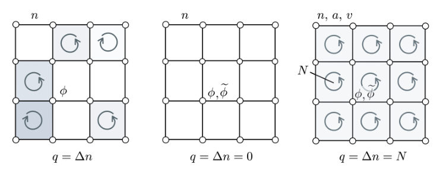
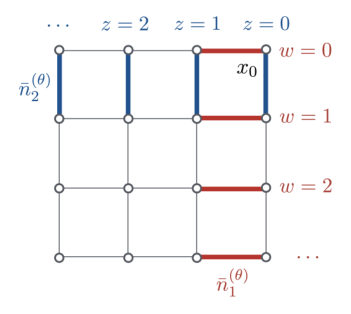
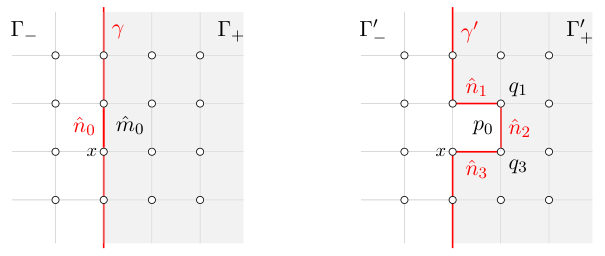
Summary. This paper demonstrates that the complex topological features of stringy T-duality in curved backgrounds can be captured exactly on a lattice. By introducing the twisted Villain model, the authors show that the exchange of bundle curvature and flux is not merely an infrared phenomenon but is present at finite lattice spacing. This provides a robust lattice-level implementation of dualities involving non-trivial topological data.
Why it may be interesting. not directly relevant
Main problem. Investigating whether stringy T-duality, specifically the exchange of bundle-flux in curved backgrounds, can be realized exactly at finite lattice spacing rather than only emerging in the infrared limit.
Main result. The authors construct a 'twisted Villain model' on a 2D lattice that captures the characteristic bundle-flux exchange of T-duality exactly and prove that the associated lattice defect is topological.
Method. The study utilizes lattice cochain calculus, Poisson resummation to derive dual actions, and a half-gauging procedure to derive and verify the lattice defect action.
Model / system. A lattice framework for non-linear sigma models on curved backgrounds with non-trivial circle fibrations, specifically using a twisted Villain model that couples a lattice fibre field to cochains encoding bundle connection and B-field components.
Key observables. Exchange of momentum and winding (in simple cases), bundle-flux exchange (in fibred cases), and the topological nature of the lattice defect.
Important parameters / regimes. Target space radius R (and its dual 1/R), Chern numbers (lambda), and H-flux (kappa).
Assumptions / limitations. The construction focuses on the Abelian fibre sector rather than a full discretization of the entire non-linear sigma model; it assumes the existence of a nowhere-vanishing Killing vector.
Figures summary. Figure 1 compares different vortex constraint regimes (Villain, modified Villain, and twisted); Figure 2 shows lattice representations of integer cochains; Figure 3 illustrates the local deformation of the interface to prove the defect is topological.
Paper structure. The paper begins by reviewing continuum T-duality, introduces the modified Villain model, constructs the new twisted Villain model for fibred backgrounds, derives the dual action via Poisson resummation, and concludes by analyzing the topological properties of the lattice defect via a half-gauging procedure.
We address the question of whether dualities formulated in continuum field theory can be realised exactly at finite lattice spacing, rather than only emerging in the infrared. In this context, we construct a lattice framework for a genuinely stringy form of T-duality. We extend the exact lattice T-duality of the compact boson to curved backgrounds with non-trivial circle fibrations, where the duality is no longer exhausted by the familiar exchange of momentum and winding, but also involves global topological data. To this end, we define the twisted Villain model, which couples the lattice fibre field to cochains encoding the bundle connection and the fibre-horizontal component of the $B$-field. We realise this structure in lattice models for several fibred backgrounds and recover the characteristic bundle-flux exchange of T-duality. Using a half-gauging procedure, we derive the associated lattice defect action and show that it defines a topological defect. This establishes that the distinctive topological features of T-duality on curved manifolds can be captured exactly in a lattice model, implying that this duality is not tied to a particular continuum representation is present in lattice-regularised models.
Authors: M. A. Anisimov, A. V. Bokov, A. V. Semeno, V. A. Sidorov, A. V. Tsvyashchenko
Type: experiment · Category: strongly correlated electrons · PDF: https://arxiv.org/pdf/2605.19088v1
Analysis basis: full PDF text, analyzed in chunks
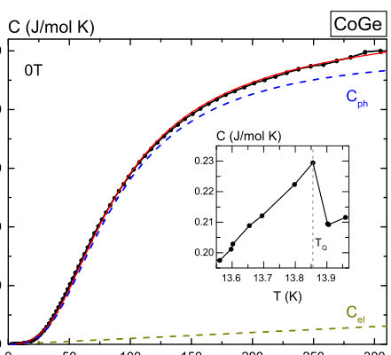
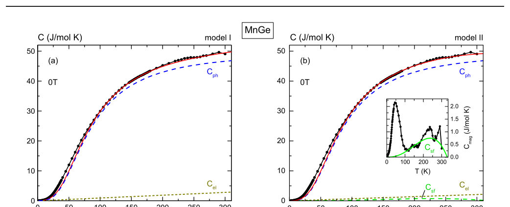
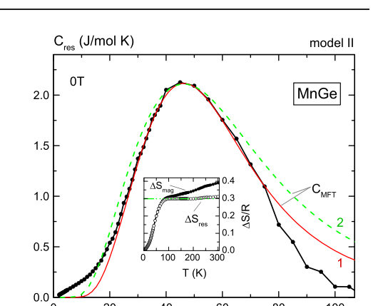
Summary. This paper provides a refined analysis of the heat capacity of the helimagnet MnGe, demonstrating that neglecting spin fluctuations leads to incorrect estimates of electronic and phononic properties. By including a specific spin-fluctuation term, the authors show that these fluctuations are a significant feature of the material's thermal properties across both magnetic and paramagnetic phases.
Why it may be interesting. not directly relevant
Main problem. The study aims to accurately disentangle the electronic, phononic, and magnetic contributions to the zero-field heat capacity of the metallic helimagnet MnGe, avoiding errors caused by standard linear fitting methods.
Main result. The researchers identified a significant spin-fluctuation component that persists across a wide temperature range in both paramagnetic and magnetically ordered states, with a spin-fluctuation temperature of approximately 330 K.
Method. The authors used zero-field heat capacity measurements and applied an expanded model (Model II) that includes a logarithmic temperature-dependent term for spin fluctuations, alongside a Debye model for phonons.
Model / system. The primary system is MnGe, a noncentrosymmetric metallic helimagnet of the B20 family. The analysis also utilizes CoGe, an isostructural Pauli-paramagnetic Weyl semimetal, as a comparative reference.
Key observables. Electronic Sommerfeld coefficient (gamma), Debye temperature (Theta_D), spin-fluctuation temperature (theta_sf), and magnetic entropy change (delta S_mag).
Important parameters / regimes. Theta_D approx 350 K, theta_sf approx 330 K, Neel temperature (T_N) approx 160-170 K, and spin S = 1/2.
Assumptions / limitations. The phonon contribution is assumed to follow a single Debye model without the need for complex Einstein modes, and the spin-fluctuation term follows a specific logarithmic temperature dependence.
Figures summary. Figure 1 shows the temperature evolution of heat capacity for CoGe with its decomposition; Figure 2 compares Model I (electronic + phononic) and Model II (including spin fluctuations) for MnGe.
Paper structure. The paper introduces the problem of inaccurate heat capacity fitting, describes the experimental setup and models used for decomposition, presents the results for both MnGe and CoGe, and discusses the implications for magnetic entropy and spin fluctuations.
Zero-field heat capacity of metallic helimagnet MnGe was analyzed based on the results of resistivity decomposition published previously by our group for the same crystal. Current procedure allowed identifying along with ($i$) electronic ($\tildeγ$ $\approx$ 7 mJ/mol$\cdot$K$^2$) and ($ii$) phononic ($Θ_D$ $\approx$ 350 K) components ($iii$) the additional term, caused by the presence of spin fluctuations (SFs). The last contribution was found to exist in a wide range of temperatures in both paramagnetic (PM) and magnetically ordered states. However, its amplitude appears to be significantly lower in comparison with phononic component. The obtained value of spin fluctuation temperature $θ_{sf}$(MnGe) $\approx$ 330 K correlates well with previous estimations, as well as with results of various experiments, which predict the existence of SFs in MnGe at least up to 250 $-$ 300 K.
Authors: Samuel H. D'Ambrosia, Sultan M. Daniels, Michael R. DeWeese, Anant Sahai
Type: theory · Category: disordered systems and neural networks · PDF: https://arxiv.org/pdf/2605.19195v1
Analysis basis: full PDF text, analyzed in chunks
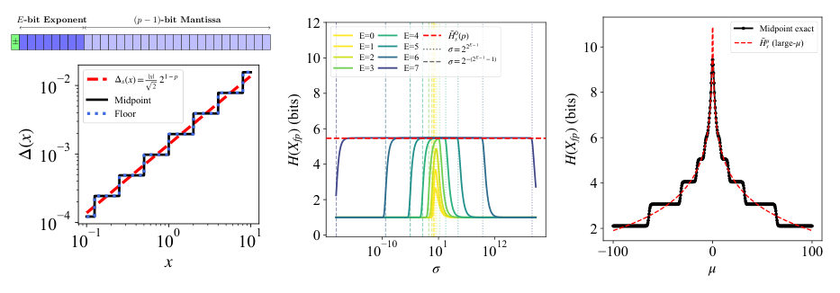
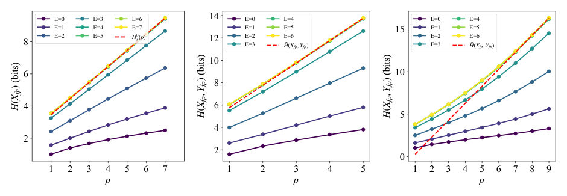
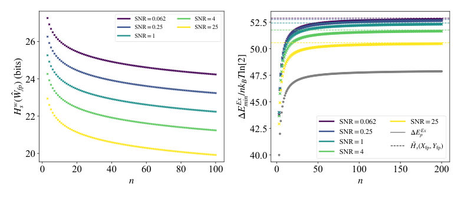
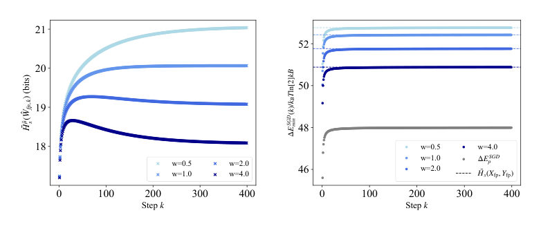
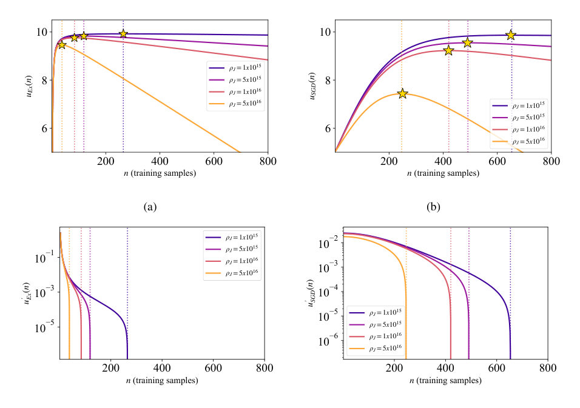
Summary. This paper quantifies the minimum energy required to train linear regression models by calculating the thermodynamic costs of processing quantized data. It reveals that the number of training samples and the precision of the hardware are the dominant drivers of energy dissipation.
Why it may be interesting. not directly relevant
Main problem. Determining the fundamental thermodynamic and energetic lower bounds (Landauer costs) associated with training machine learning models, specifically simple linear regression and SGD.
Main result. The thermodynamic cost is primarily driven by the reduction in entropy from input to output, scaling linearly with the number of input data points and heavily influenced by floating-point precision.
Method. The authors apply Landauer's principle to quantized floating-point representations of Gaussian variables and use an Ornstein-Uhlenbeck process to model SGD dynamics.
Model / system. A digital computational framework using IEEE-754 floating-point arithmetic to perform simple linear regression on Gaussian-distributed datasets.
Key observables. Landauer cost (minimum energy/work), Shannon entropy of quantized variables, Mismatch Cost (MMC), and Signal-to-Noise Ratio (SNR).
Important parameters / regimes. Number of data points (n), floating-point precision (p), exponent bits (E), learning rate (eta), batch size (B), and Signal-to-Noise Ratio (SNR).
Assumptions / limitations. The computation is logically irreversible (inputs are erased); the system remains in thermal equilibrium; and floating-point bin sizes can be smoothed for analytical tractability.
Figures summary. Figures illustrate the structure of floating-point numbers, the accuracy of entropy approximations, the relationship between entropy and mean/variance, and the landscapes of mismatch costs for regression algorithms.
Paper structure. The paper progresses from defining the regression task and digital implementation to applying Landauer's principle, deriving entropy approximations for quantized Gaussians, and finally optimizing training parameters based on energy costs.
The construction of models from data is a significant contributor to the energetic costs of computation. Because of this, understanding how foundational thermodynamic bounds apply to modeling algorithms will be increasingly important. Here, we study the thermodynamic costs of a basic and fundamental modeling algorithm: simple linear regression. Following Landauer, we approximate the thermodynamic lower bound on irreversibly performing both exact linear regression and linear regression via stochastic gradient descent as implemented on floating-point numbers. From this, we derive energycost aware scaling laws for the optimal dataset size for training a linear regression model given a generalization error dependent demand for inference. Additionally, we discuss a method to lower bound the entropy production from the mismatch cost for algorithms with continuous input variables.
Authors: Nouhaila Innan, Saim Rehman, Muhammad Shafique
Type: theory · Category: quantum information and computing · PDF: https://arxiv.org/pdf/2605.19417v1
Analysis basis: full PDF text, analyzed in chunks
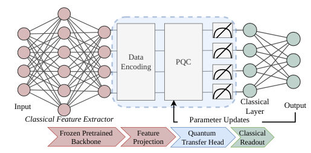
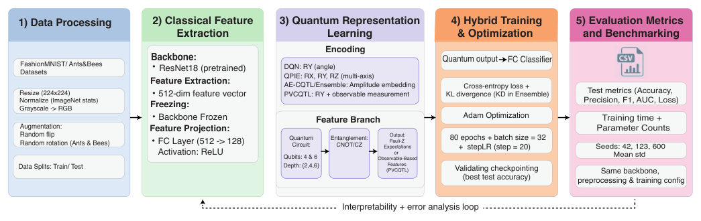
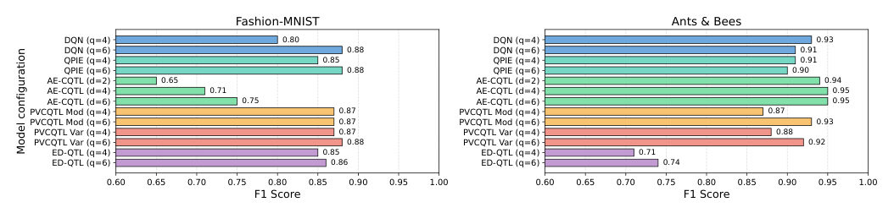
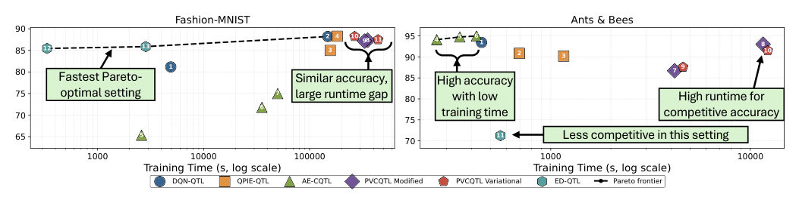
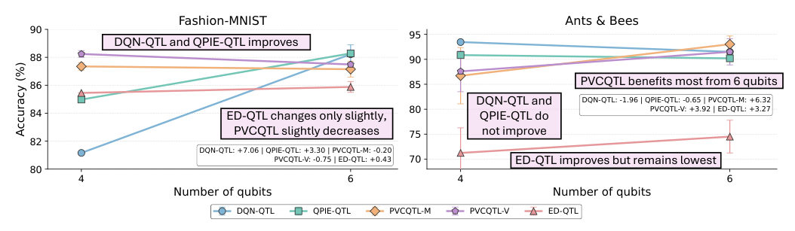
Summary. This paper establishes a standardized framework to compare different Quantum Transfer Learning methods for image classification. It demonstrates that evaluating quantum machine learning solely on accuracy is insufficient, as high performance often comes at the cost of increased circuit complexity and training time. The work provides a resource-aware lens for selecting hybrid quantum-classical models under near-term constraints.
Why it may be interesting. not directly relevant
Main problem. The lack of a fair, standardized, and resource-aware benchmarking methodology for evaluating Quantum Transfer Learning (QTL) methods for visual classification.
Main result. The study finds that no single QTL family dominates across all settings; performance is highly dependent on the dataset, encoding strategy, and circuit design, necessitating a trade-off analysis between accuracy and computational cost.
Method. A controlled benchmarking pipeline using a frozen ResNet18 backbone, standardized preprocessing, and a unified evaluation of five QTL families (DQN, QPIE, AE, PVC, and ED) across multiple datasets.
Model / system. A hybrid quantum-classical architecture consisting of a pretrained classical feature extractor, a feature projection layer, a parameterized quantum circuit (PQC) acting as a transfer head, and a classical readout layer.
Key observables. Classification metrics (accuracy, F1-score, precision, recall, ROC-AUC) and quantum observables (Pauli-Z expectation values).
Important parameters / regimes. Qubit count (4, 6, 9), circuit depth, number of trainable/quantum parameters, and training time.
Assumptions / limitations. The study assumes a NISQ-era setting with limited qubits and shallow depths, uses a frozen-backbone approach, and relies on classical simulations of quantum circuits rather than physical hardware.
Figures summary. Figure 1 shows the hybrid architecture; Figure 2 is a flowchart of the benchmark protocol; Figure 3 compares F1 scores across datasets; Figure 4 is a scatter plot of the accuracy-vs-training time trade-off; Figure 5 illustrates qubit-scaling behavior.
Paper structure. The paper introduces the benchmarking problem, defines the hybrid architecture and QTL families, details the controlled experimental protocol and datasets, presents comparative results across performance and efficiency metrics, and concludes with scaling analysis and future directions.
Quantum Transfer Learning (QTL) offers a promising approach for visual quantum machine learning under near-term constraints, where limited qubit counts, shallow circuit depths, and costly hybrid optimization restrict end-to-end quantum training. In this setting, pretrained classical backbones can extract high-level visual features, while compact quantum modules operate as trainable classification heads. However, existing QTL results are difficult to compare because they often differ in datasets, preprocessing, backbone settings, qubit budgets, circuit designs, optimization choices, and reporting protocols. This work presents a controlled benchmarking methodology for evaluating representative QTL methods under a unified transfer-learning pipeline. The benchmark compares DQN-QTL, QPIE-QTL, AE-CQTL, PVCQTL, and ED-QTL under shared preprocessing rules, frozen-backbone settings, training conditions, and reporting metrics. The evaluation focuses on Fashion-MNIST and Hymenoptera Ants vs Bees as the two main datasets, while CIFAR-10 is used to provide additional configuration-level evidence on a harder natural-image task. Beyond predictive performance, the benchmark analyzes circuit size, trainable parameters, quantum parameters, training time, and architectural sensitivity to qubit count and circuit depth. The results show that no single QTL family dominates across all settings: performance depends on the dataset, encoding strategy, circuit design, and computational cost. These findings highlight the need for resource-aware QTL evaluation and provide guidance for selecting hybrid quantum-classical transfer models under near-term resource constraints.
Authors: Sophia G. Krastana, Anthony N. Papathanassiou
Type: experiment · Category: statistical mechanics · PDF: https://arxiv.org/pdf/2605.19560v1
Analysis basis: full PDF text, analyzed in chunks


Summary. This paper shows that the relaxation dynamics of compressed graphite powder follow a modified Adam-Gibbs law, similar to glass-forming liquids. By using dielectric spectroscopy, the researchers established a non-destructive way to track structural changes and thermodynamic properties in athermal granular materials.
Why it may be interesting. not directly relevant
Main problem. Investigating whether the structural relaxation of athermal granular materials can be probed via thermally activated processes and if the Adam-Gibbs model for glass-forming liquids can be extended to these systems using Edwards' statistical thermodynamics.
Main result. The study demonstrates that the logarithm of the dielectric relaxation time scales with granular temperature and configurational entropy, validating a modified Adam-Gibbs relationship for granular matter.
Method. Broadband dielectric spectroscopy was used to measure complex impedance of compressed graphite powder, while volumetric changes were used to calculate packing fraction and thermodynamic variables.
Model / system. The system consists of an athermal granular medium made of compressed graphite powder (particle size <= 20 micrometers) analyzed using Edwards' statistical mechanics and a modified Adam-Gibbs model.
Key observables. Complex impedance (real and imaginary parts), electrical conductivity, capacitance, dielectric relaxation time, packing fraction, granular temperature, and configurational entropy.
Important parameters / regimes. Packing fraction (phi), granular temperature (Tc), configurational entropy (Delta Sc), and the transition between loose and compact states.
Assumptions / limitations. The structural relaxation of granular systems can be probed via electric charge hopping/trapping, and classical thermal variables can be substituted with granular equivalents in the Adam-Gibbs framework.
Figures summary. Fig 1 shows the experimental setup with electrodes and powder; Fig 2 shows frequency-dependent impedance and conductivity vs packing fraction; Fig 3 shows frequency-dependent permittivity.
Paper structure. The paper introduces the problem of applying the Adam-Gibbs model to athermal systems, describes the experimental setup and dielectric spectroscopy methods, presents the derivation of thermodynamic variables from volumetric data, and concludes with the validation of the scaling law and the utility of the method.
In glass-forming liquids, structural dynamics are governed by configurational entropy and temperature, with dielectric relaxation time scaling alongside structural relaxation time as described by the Adam-Gibbs (AG) model. Under Edwards's athermal statistical thermodynamics, a modified AG law similarly governs granular matter, provided that granular temperature and configurational entropy are appropriately defined. This study investigates whether variations in the structural relaxation of granular systems can be probed via thermally activated processes, specifically electric charge hopping and trapping. By progressively reducing the volume of graphite powder to vary its packing fraction, we estimated relative configurational entropy and granular temperature from volumetric data, while evaluating electrical conductivity and capacity via impedance spectroscopy. We demonstrate that the logarithm of the dielectric relaxation time, derived from complex impedance, scales with granular temperature and entropy across both loose and compact states. Consequently, changes in the complex impedance resulting from packing fraction variations are tuned by granule configuration, strictly adhering to an AG-like relationship for thermal systems. These findings establish dielectric spectroscopy as a viable, non-destructive tool for tracing configurational dynamics in granular matter, analogous to its established use in polymers and glass formers.
Authors: K. Beauvois, J. Robert, M. Songvilay, J. Ollivier, B. Fåk, E. Ressouche, N. Qureshi, R. Ballou, S. Petit, S. Lenne, P. Manuel, S. DeBrion, P. Strobel, V. Simonet
Type: both · Category: strongly correlated electrons · PDF: https://arxiv.org/pdf/2605.20029v1
Analysis basis: full PDF text, analyzed in chunks
Summary. This paper demonstrates that the magnetic ground state in GeNi2O4 and GeCo2O4 spinels is a 2-k spin vortex crystal rather than a collinear structure. It shows how magnetic anisotropy transforms a 3-k Bloch-point structure into a 2-k vortex texture. This provides a new way to understand the formation of complex multi-k spin textures in frustrated antiferromagnets.
Why it may be interesting. not directly relevant
Main problem. Determining the nature of the magnetic ground state and the complex exchange interactions in the frustrated spinels GeNi2O4 and GeCo2O4, specifically resolving whether the structure is a single-k collinear or a multi-k vortex crystal.
Main result. The study identifies a 2-k magnetic structure characterized as a short-period spin vortex crystal, which is induced by magnetic anisotropy acting on a predicted 3-k Bloch-point structure.
Method. Simultaneous modeling of single-crystal neutron diffraction and inelastic neutron scattering data using a Heisenberg Hamiltonian with long-range exchange interactions (up to 6th neighbor) and linear spin wave theory.
Model / system. The physical system consists of the GeB2O4 family of spinels (B=Ni, Co) featuring a pyrochlore lattice. The model uses a Heisenberg Hamiltonian including FM J1, AFM J3, and further interactions (J'3, J4, J6) along with single-ion anisotropy.
Key observables. Dynamical structure factor S(Q, h-omega), spin wave dispersion, magnetic Bragg peak intensities, and magnetic propagation vectors.
Important parameters / regimes. Exchange constants (J1 through J6), anisotropy factor (g-perp/g-parallel), and magnetic propagation vector k = (1/2, 1/2, 1/2).
Assumptions / limitations. The calculations for the Co compound did not account for potential structural distortions from cubic to lower symmetry which might drive the system toward a 1-k structure.
Figures summary. Figure 1 shows the spinel structure and exchange scheme; Figures 5-6 show spin wave dispersion; Figure 8 shows energy comparisons of 1-k, 2-k, and 3-k structures; Figure 9 illustrates Fourier component norms and orientations; Figure 12-14 show dynamic structure factor comparisons and symmetry analysis.
Paper structure. The paper introduces the spinel system, presents experimental neutron scattering data, details the Hamiltonian modeling approach, discusses the identification of the 2-k vortex structure, and concludes with a symmetry and phase stability analysis.
In the search for new spin textures based on singular magnetic objects like Bloch-points or vortices, spinel compounds emerge as an interesting playground due to the interplay between magnetic anisotropy and complex interactions that extend well beyond first neighbors on a pyrochlore lattice. Based on an exploration of the exchange interaction phase diagrams of members of the Ge$B_2$O$_4$ family with $B$=Co and Ni, we show, using simultaneous modeling of inelastic neutron scattering measurements and single-crystal neutron diffraction data, that a 2-$k$ magnetic structure may be stabilized in these compounds. This leads to a short period spin vortex crystal, a variant induced by the magnetic anisotropy of the 3-$k$ Bloch-point structure predicted for isotropic spins. Our study rationalizes the formation of these multi-$k$ spin textures in frustrated antiferromagnets, as well as their anisotropy-dependent evolution.
Papers from cond-mat.mtrl-sci, mes-hall, other, soft, supr-con. These archives are de-prioritized — they appear at the end regardless of relevance score.
Authors: Vahid Mosallanejad, Wenjie Dou
Type: theory · Category: numerical methods · PDF: https://arxiv.org/pdf/2605.19296v1
Analysis basis: full PDF text, analyzed in chunks
Topic relevance: 🔥 Keldysh / 2PI / non-Gaussian methods 4/5 · 🔥 methods for driven-dissipative 4/5 · 🔥 non-equilibrium dynamics 4/5 · Kondo & dissipative impurity 2/5 · driven-dissipative phase transition 2/5
Summary. The paper introduces a new Floquet-NEGF method for calculating quantum transport in systems driven by multiple independent frequencies. It successfully extends the standard single-mode Floquet theory to a multi-mode framework, showing how additional driving frequencies can be used to control current suppression.
Why it may be interesting. This provides a powerful new tool for studying complex, multi-chromatic driving in open quantum systems, which is highly relevant for controlling transport and localization in quantum dots and molecular electronics.
Main problem. Developing a non-perturbative, scalable computational framework to study electron transport in open quantum systems driven by multiple independent periodic frequencies (multi-mode driving).
Main result. The authors derive a multi-mode Floquet-NEGF method that transforms the Kadanoff-Bay1m equation into a solvable algebraic equation, demonstrating that secondary off-diagonal driving can significantly modify current suppression patterns.
Method. A non-perturbative Floquet-based Non-Equilibrium Green's Function (NEGF) approach using a mixed time-frequency transformation and multi-dimensional Fourier expansion to handle multi-mode driving.
Model / system. Open quantum systems such as molecular wires or two-level systems (TLS) coupled to non-interacting metallic reservoirs, subject to a time-dependent Hamiltonian with multiple periodic driving terms.
Key observables. Time-averaged particle current, time-averaged occupation (population), and localization/population imbalance.
Important parameters / regimes. Driving frequencies (omega1, omega2), driving amplitudes, chemical potentials, temperature, and coupling strength (Gamma).
Assumptions / limitations. The Hamiltonian is periodic or multi-periodic; the expansion of Green's functions is truncated to a finite range of Floquet indices; and the reservoirs are non-interacting.
Figures summary. Figure 1 shows a schematic of single-mode driving and maps of particle localization and current suppression patterns in a two-level system.
Paper structure. The paper begins by justifying the need for multi-mode NEGF, derives the two-mode Floquet-NEGF from the Kadanoff-Baym equation, generalizes the method to M-mode driving, and concludes by testing the method on current suppression and localization in a driven two-level system.
We present a non-perturbative Floquet-based non-equilibrium Green's function (NEGF) method to study electron transport in a quantum system driven simultaneously by multiple independent terms (multi-mode). We first derive the two-mode Floquet NEGF based on two-step transformations of the retarded-advanced Green's function from the Kadanoff-Baym equation. This derivation proceeds by elaborating on the expectation values of the number and current operators. The two-mode Floquet NEGF is then extended to cases with multiple drivings. The method is tested by investigating current suppression in the presence of two drivings. We show that an extra sinusoidal off-diagonal driving can cause substantial modification to the current suppression, provided careful selection of the driving frequency. Consequently, we expect that the established method has broad applications in a wide range of open quantum systems driven by complicated drivings.
Authors: Priyanka Samanta, Joydip Sarkar, Ashish Abhraham Samuel, Madhavi Chand, Kenji Watanabe, Takashi Taniguchi, Mandar M. Deshmukh
Type: experiment · Category: quantum information and computing · PDF: https://arxiv.org/pdf/2605.20155v1
Analysis basis: full PDF text, analyzed in chunks
Topic relevance: 🔥 QC/QI experiment 4/5 · quantum optics experiment 3/5
Summary. This paper demonstrates that the Kerr nonlinearity in graphene Josephson junctions is highly tunable using gate voltage, temperature, and DC bias. By manipulating these parameters, the researchers show that the nonlinearity can be controlled over a significant range, providing a versatile platform for developing advanced quantum sensors and amplifiers.
Why it may be interesting. The ability to tune nonlinear coefficients (Kerr and cubic) via external knobs like DC bias and gating is highly relevant for designing parametric amplifiers and nonlinear elements in circuit QED and quantum optics.
Main problem. The study aims to explore and control the tunable Kerr nonlinearity in graphene-based Josephson junctions to optimize their use in next-generation quantum amplifiers and sensors.
Main result. The researchers demonstrated that the Kerr nonlinearity can be tuned over a wide range (300 kHz to 1.2 MHz) using gate voltage, temperature, and DC bias, with the DC bias also enabling the engineering of cubic nonlinearity.
Method. The study uses microwave reflectometry on a lumped-element LC resonator to measure power-dependent resonance frequency shifts and DC pseudo-4-probe measurements to characterize differential resistance.
Model / system. The system is a planar SNS Josephson junction consisting of few-layer graphene encapsulated in hBN with MoRe electrodes, integrated into a coplanar waveguide (CPW) modeled as a parallel LCR circuit.
Key observables. Kerr coefficient (K), resonance frequency, differential resistance (dV/dI), and reflection coefficient (|S11|).
Important parameters / regimes. Gate voltage (Vg), temperature (T), DC bias current (IDC), and the inductive participation ratio (p).
Assumptions / limitations. The junction is modeled using the RCSJ model and a Duffing oscillator approximation for the nonlinear response.
Figures summary. Figure 1 shows the device architecture and circuit model; Figure 2 displays differential resistance maps and microwave resonance dependence; Table I compares the Kerr coefficient across different junction platforms.
Paper structure. The paper introduces the device architecture, details the experimental characterization of the junction, presents the results of tuning the nonlinearity via gate voltage, temperature, and DC bias, and concludes with a comparative analysis of different superconducting platforms.
Josephson junction (JJ) is a key nonlinear element in superconducting devices such as qubits, amplifiers, and bolometers. Recently, gate-tunable JJs based on graphene and semiconductors have gained interest due to their rich Andreev physics and wide applications in circuit quantum electrodynamics devices. In addition to gate tunability, it offers many advantages over conventional JJs, such as exceptional thermal properties for bolometric sensors, magnetic-field compatibility, and operability at elevated temperatures above 1 K. Like conventional Al-AlOx-Al JJs, graphene JJs also act as nonlinear inductors, and at their heart lies the Kerr nonlinearity. Additionally, in graphene JJs, the nonlinearity is tunable via external knobs in a single device. However, a detailed exploration of the tunable Kerr nonlinearity in graphene JJs has never been performed. In this work, we study the dependence of the Kerr nonlinearity on gate voltage, temperature, and DC bias - an interesting knob that has been less explored. Using these parameters, we show that the magnitude of the Kerr coefficient can be tuned over a wide range, from 300 kHz to 1.2 MHz. Our work will be a valuable resource for further understanding of the nonlinearity in graphene JJs and for the design of next-generation amplifiers and sensors, with enhanced performance.
Authors: A. M. Tishin
Type: theory · Category: quantum information and computing · PDF: https://arxiv.org/pdf/2605.19647v1
Analysis basis: full PDF text, analyzed in chunks
Topic relevance: driven-dissipative phase transition 3/5 · non-equilibrium dynamics 3/5 · spintronics-quantum-optics interface 3/5 · methods for driven-dissipative 2/5
Summary. The paper proposes a method to stabilize non-adiabatic magnon dynamics in nanoscale ferrites using intrinsic nonlinearity to prevent uncontrolled energy growth. By using Co-doped YIG, the authors demonstrate that switching can occur at attojoule scales without spectral leakage. This provides a physical foundation for ultra-low-energy, high-frequency wave-based computing.
Why it may be interesting. It presents a novel way to use non-adiabaticity (usually a source of error) as a deterministic control tool, utilizing nonlinearities to map SU(1,1) dynamics onto a stable SU(2) computational subspace, which is highly relevant to open quantum systems and quantum control.
Main problem. Controlling uncontrolled energy growth and spectral leakage in non-adiabatic magnonic systems to enable stable, low-energy, wave-based information processing.
Main result. The introduction of a nonlinear frequency regulator (U) suppresses parametric divergence and stabilizes the system into a bounded, low-occupancy, two-level computational regime.
Method. Numerical verification using a truncated 100-level Fock basis with 4th-order Runge-Kutta integration and Bogoliubov transformations.
Model / system. A quantum harmonic mode in nanoscale ferrite structures (specifically Co-doped YIG) governed by a time-dependent Hamiltonian featuring a nonlinear frequency regulator and parametric drive.
Key observables. Fock-state occupancy, Bogoliubov coefficients, non-adiabaticity parameter (eta), and switching energy density.
Important parameters / regimes. Non-adiabaticity parameter (eta) approx 1.2, nonlinear regulator (U) approx 0.12-0.5, switching energy of 22.2 aJ, and operational frequency of 50-100 GHz.
Assumptions / limitations. The system is treated as a single-mode approximation within a 20-nm cell; the efficiency comparison assumes specific thermal and cooling constraints.
Figures summary. The notes mention Figure 1 (Left) showing mean occupancy dynamics.
Paper structure. The paper progresses from the energy crisis in CMOS to the potential of magnonics, identifies the instability problem in non-adiabatic regimes, proposes the nonlinear stabilization via the eta-algorithm, verifies it with YIG:Co parameters, and concludes with a roadmap for large-scale architecture.
We propose a nonlinear magnonic platform for bounded non-adiabatic parametric excitation in nanoscale ferrite structures. The approach is based on the η-algorithm, where the non-adiabaticity parameter quantifies the strength of the parametric drive, while the nonlinear frequency regulator U represents the anharmonic spectral detuning of the medium. Using Co-doped yttrium iron garnet (YIG:Co) as a representative material system, we analyze how nonlinear detuning suppresses uncontrolled parametric growth and drives the system toward a dynamically localized low-occupancy magnonic state. Numerical verification in truncated Fock bases shows that a finite regulator U can suppress leakage into higher-order modes and preserve bounded dynamics under non-adiabatic excitation. The experimentally reported absorbed energy density for ultrafast switching in YIG:Co corresponds to an estimated switching energy of approximately 22 aJ for a 20x20x10 nm3 cell, providing a physically relevant scale for low-energy resonant state formation. We further discuss the role of magnetic damping, exchange-gap confinement, and phonon transparency in maintaining coherent magnonic dynamics over multiple operation cycles. These results suggest that nonlinear self-limited non-adiabatic dynamics in ferrite nanostructures may provide a physical basis for low-energy wave-based information processing.
Authors: Xingran Xu, Chunyu Jia
Type: theory · Category: other · PDF: https://arxiv.org/pdf/2605.19913v1
Analysis basis: full PDF text, analyzed in chunks
Topic relevance: non-equilibrium dynamics 3/5 · Keldysh / 2PI / non-Gaussian methods 2/5 · correlated / nonlocal dissipation 2/5 · driven-dissipative phase transition 2/5 · methods for driven-dissipative 2/5
Summary. This paper explores how Bound States in the Continuum can be used to stabilize and control exciton-polariton solitons in microcavities. It reveals that these engineered structures exhibit a unique self-deceleration behavior, eventually coming to a halt. This discovery offers a new mechanism for manipulating light-matter fluid dynamics in non-Hermitian systems.
Why it may be interesting. It provides new insights into controlling polaritonic flows and soliton transport using non-Hermitian engineering (BICs), which is highly relevant to open quantum systems and non-equilibrium dynamics.
Main problem. Investigating the formation, stability, and transport dynamics of bright exciton-polariton solitons in microcavities engineered with Bound States in the Continuum (BICs) to overcome rapid radiative decay.
Main result. The study demonstrates that BIC-engineered dispersion enables a unique self-deceleration effect where solitons eventually halt at a final position, contrasting with the self-acceleration seen in standard systems.
Method. A Lagrangian variational approach is used with a sech-shaped wavefunction ansatz applied to a driven-dissipative Gross-Pitaevskii equation coupled to a reservoir rate equation.
Model / system. Exciton-polariton condensates in microcavities featuring BICs, modeled by a driven-dissipative Gross-Pitaevskii equation (GPE) coupled to an excitonic reservoir rate equation, characterized by negative effective mass and momentum-dependent loss.
Key observables. Soliton amplitude, central position, velocity (momentum), phase, dispersion spectrum, and emission spectrum.
Important parameters / regimes. Pump strength (P), decay rates (gamma_C, gamma_R), interaction strengths (g, g_R), BIC fitting parameter (Lambda), and initial momentum (k(0)).
Assumptions / limitations. Weak pumping condition (P approx P_th), large reservoir decay rate (gamma_R >> gamma_C), and treating reservoir dynamics as a perturbation.
Figures summary. Figure 1 shows the soliton density distribution and the BIC-induced dispersion and emission spectra; Figure 2 illustrates density distributions for different initial conditions and the dependence of the final position on initial amplitude and momentum; Figure 3 shows the effect of material parameters on stability.
Paper structure. The paper introduces the problem of radiative decay, describes the BIC-engineered system and the GPE-reservoir model, applies the variational method to derive analytical trajectories, presents results on self-deceleration and stability, and concludes with implications for non-Hermitian physics.
We theoretically investigate the formation and dynamics of bright exciton-polariton solitons in systems engineered with Bound States in the Continuum. By employing a driven-dissipative Gross-Pitaevskii equation coupled with a rate equation for the excitonic reservoir, we demonstrate that BICs provide a robust platform for stabilizing the condensate against radiative decay. Using a Lagrangian variational approach, we derive analytical expressions for the trajectory and velocity of these bright solitonic excitations. We find that the propagation of these BIC-engineered structures exhibits distinct self-deceleration, eventually halting at a final position determined by the initial momentum and intrinsic system parameters. Furthermore, we analyze the dynamical stability of these solitons. Our findings offer valuable insights into the manipulation of polaritonic flows in non-Hermitian systems.
Authors: Andrus Giraldo, Stefan Ruschel, Behrooz Yousefzadeh
Type: theory · Category: statistical mechanics · PDF: https://arxiv.org/pdf/2605.18997v1
Analysis basis: full PDF text, analyzed in chunks
Topic relevance: non-equilibrium dynamics 3/5 · correlated / nonlocal dissipation 2/5 · driven-dissipative phase transition 2/5 · methods for driven-dissipative 2/5
Summary. This paper explores how nonreciprocal, 'odd' elasticity in nonlinear lattices enables the formation of periodic and quasiperiodic traveling waves. It provides a mathematical framework to predict when these waves become unstable due to lattice size or wavenumber changes. The findings are crucial for understanding wave propagation in active and dissipative materials.
Why it may be interesting. The study of nonreciprocal dynamics and broken symmetry in lattices is highly relevant to the development of active matter models and non-Hermitian physics, which has significant implications for driving energy transport in open many-body systems.
Main problem. Investigating the existence, stability, and dynamics of periodic and quasiperiodic traveling waves in nonlinear lattices characterized by nonreciprocal (odd) elasticity.
Main result. The study identifies the onset of Eckhaus and torus instabilities and demonstrates that certain wave profiles can be stable across all finite lattice embeddings, establishing a unified framework for wave propagation in nonreciprocal dissipative systems.
Method. The authors use a Master Stability Framework with Floquet-Bloch decomposition, the Rotating Wave Approximation (RWA) for envelope dynamics, and numerical continuation via DDE-BIFTOOL.
Model / system. A 1D lattice of N coupled Duffing oscillators arranged in a ring, featuring nonreciprocal (asymmetric) elastic coupling that breaks action-reaction symmetry.
Key observables. Traveling wave profiles (periodic and quasiperiodic), Floquet exponents/spectrum, and the evolution of the wave envelope.
Important parameters / regimes. Nonreciprocity parameter (alpha), damping coefficient (zeta), nonlinearity (beta), coupling strength (kappa), and lattice size (N).
Assumptions / limitations. The analysis assumes a non-dimensionalized model where quadratic stiffness is negligible and the nonreciprocity parameter is restricted to the range 0 to 1.
Figures summary. Figure 1 shows system schematics and spatiotemporal simulations of different wave regimes; Figure 2 displays dispersion curves; Figure 4 presents bifurcation diagrams for linear and nonlinear cases; Figure 5 illustrates master stability curves and the Eckhaus instability boundary.
Paper structure. The paper introduces the concept of odd elasticity, defines the nonlinear oscillator model, performs linear stability analysis to find the Hopf bifurcation, applies the RWA to study wave envelopes and secondary instabilities (Eckhaus/torus), and concludes with a master stability analysis regarding lattice size effects.
Discrete nonlinear systems support a rich variety of localized and extended wave phenomena, with their dynamics sensitively dependent on the symmetries of the underlying interaction forces within the lattice. Odd elasticity, emerging in effective models of active materials, breaks the action-reaction symmetry of the local interactions and gives rise to new wave behavior. We investigate the existence and stability of traveling waves in a nonlinear lattice with odd elasticity, where the coupling force between adjacent units depends asymmetrically on the deformations of the coupled units (nonreciprocal elastic coupling). We demonstrate the existence of periodic and quasiperiodic traveling waves and analyze their spectral stability using the master stability framework. In particular, we identify the onset of Eckhaus instability based on the curvature of the associated master stability curve. This approach enables a quantitative analysis of size effects, specifically the bounds on lattice sizes for which a given traveling wave is stable. The stability analysis for quasiperiodic waves is based on an effective description of the envelope of the response through a rotating wave approximation, which agrees well with direct numerical simulations. Our findings establish a unified framework for understanding wave propagation characteristics in nonlinear lattices, for both periodic and quasiperiodic wave profiles. We highlight, qualitatively and quantitatively, the role of nonreciprocal stiffness on the existence and stability of nonlinear traveling waves in dissipative systems, and discuss how localization and stability depend on the interplay between nonlinearity, dissipation and odd elasticity.
Authors: Sofie Helene Ursin, Mathias Kläui, Kjetil M. D. Hals
Type: theory · Category: other · PDF: https://arxiv.org/pdf/2605.19659v1
Analysis basis: full PDF text, analyzed in chunks
Topic relevance: Keldysh / 2PI / non-Gaussian methods 3/5 · non-equilibrium dynamics 2/5 · spintronics-quantum-optics interface 2/5
Summary. This paper explores how lattice vibrations (phonons) can be used to drive and control spin currents in altermagnets. It reveals that tuning the frequency of phonons can flip the direction of the spin current, providing a potential mechanism for tunable terahertz spintronics.
Why it may be interesting. not directly relevant
Main problem. The study investigates how selective phonon excitations can generate and control nonequilibrium magnon spin currents in altermagnets.
Main result. The researchers demonstrate that the resulting spin currents exhibit d-wave symmetry and that the spin current direction can be completely reversed by tuning the phonon frequency.
Method. The study uses the Keldysh Green's function formalism to perturbatively compute nonequilibrium magnon distributions and spin currents induced by single and two-magnon phonon processes.
Model / system. A two-dimensional altermagnetic Lieb lattice with C4v symmetry, featuring a three-atom unit cell and a magnon Hamiltonian including antiferromagnetic and anisotropic ferromagnetic exchange.
Key observables. Nonequilibrium magnon spin current (z-polarized spin current Jz)
Important parameters / regimes. Phonon frequency, phonon momentum (q), and altermagnetic exchange coupling (Delta J2)
Assumptions / limitations. Assumes the absence of spin-orbit coupling, radially isotropic exchange parameters, and treats phonon modes as classically coherent.
Figures summary. Figure 1 shows the reversal of spin current via frequency tuning; Figure 2 illustrates the Lieb lattice structure, phonon modes, and magnon band-splitting; Figure 3 displays the d-wave symmetry and sign reversal of the spin current.
Paper structure. The paper introduces the altermagnetic system, develops a microscopic theory for coupled magnon-phonon systems using Keldysh formalism, analyzes single- and two-magnon processes, and concludes with the identification of symmetry-governed fingerprints of altermagnetism.
Altermagnets have recently attracted considerable interest due to their unique symmetry-governed spintronic properties. Here, we investigate phonon-induced magnon spin currents in a two-dimensional altermagnet. Starting from a microscopic theory of the coupled magnon-phonon system, we derive the nonequilibrium magnon distribution generated by selective phonon excitations. We show that the resulting spin currents exhibit a pronounced d-wave symmetry with respect to the phonon momentum. Moreover, the spin current along the altermagnetic directions can be completely reversed by tuning the phonon frequency. These findings establish altermagnets as promising platforms for realizing highly tunable, phonon-driven coherent terahertz magnon spin currents.
← Index · ← Previous · Next →